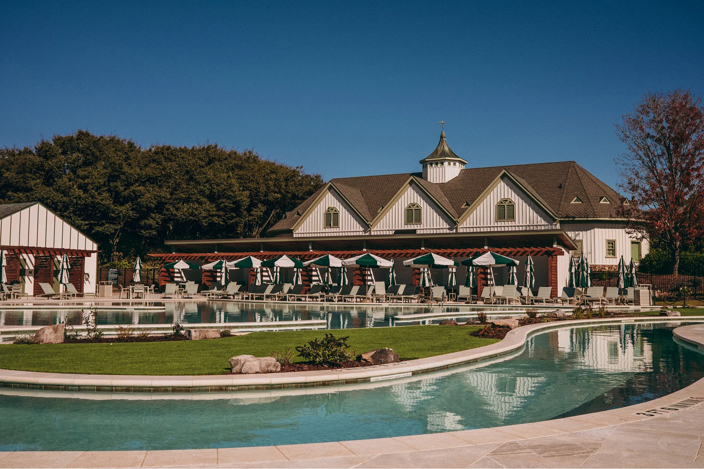

00 — Constructing Hospitality
Construction is a service industry no different than a high-end restaurant or a boutique hotel.
The process of building should be as enjoyable as the end product, resulting in relationships and projects that are built for generations.
A general contractor for hospitality, commercial, retail, healthcare and high-end residential work.

01 — Practice
02 — Territory
From Cartersville, Freeman has built across north Georgia — Atlanta, Adairsville, Dalton and the mountain town of Blue Ridge — and north over the state line to Cleveland, Tennessee.
03 — People
Relationships are the bedrock of the work — with clients, subcontractors, suppliers, architects and engineers.
04 — Kind words
“Freeman General Contracting is a breath of fresh air in the construction industry. Highly communicative, attentive to detail, and easy to be around.”
Paul Nair — Founder, Savi Provisions
05 — Questions